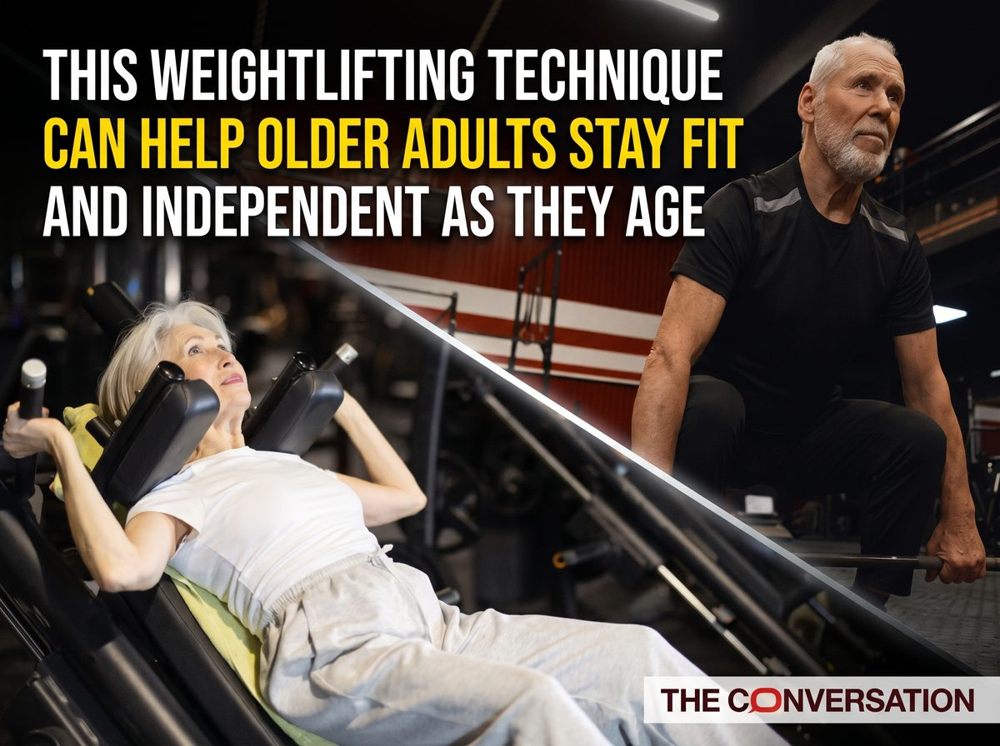
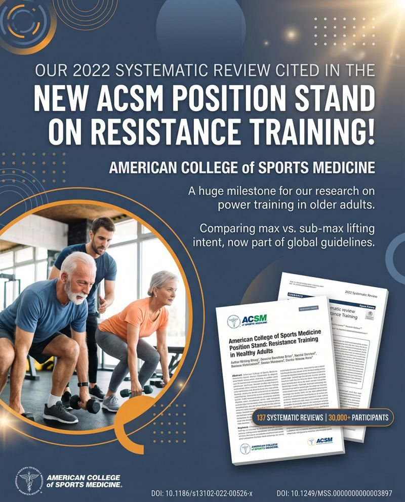
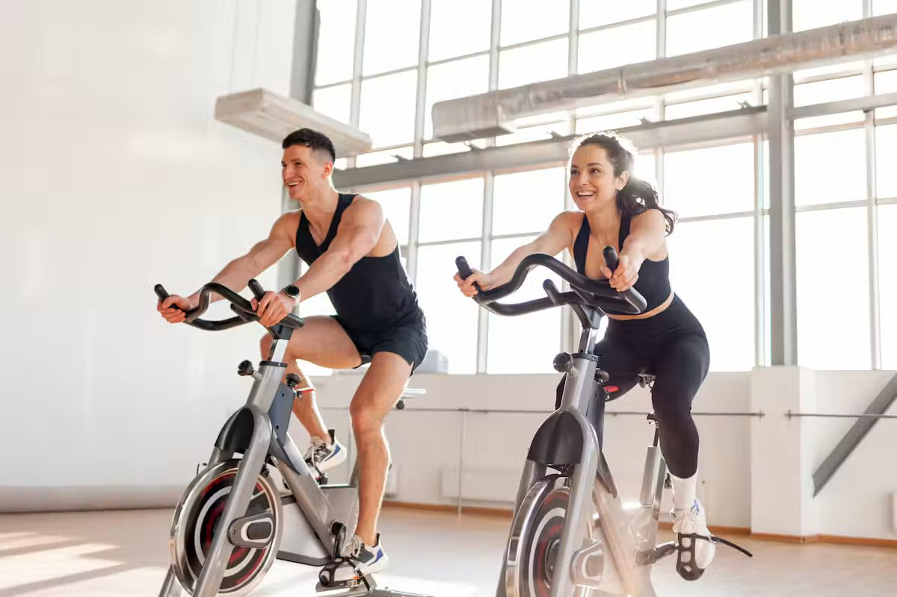

Articles, radio and features, and where my research has been cited.
Release date to be confirmed
A film made by colleagues in Northumbria’s Film department, now complete and awaiting release. I trained the whole crew to use surface EMG (muscle activity) software, calibrate it, analyse the data, and visualise it clearly for the film.
Due December 2026
A reader got in touch through my Conversation author profile. Highland Senior Citizens Network, a collective advocacy organisation for older people in the Highlands, has asked to share the article with its members in its December news-sheet, and I have agreed. Not yet published.
6 November 2026

Written for The Conversation UK, this evidence article explains why lifting the weight quickly, while lowering it under control, may help older adults build the muscle power that supports everyday tasks such as climbing stairs and recovering from a trip.
Read Full ArticleWednesday 4 November 2026
A live interview on BBC Radio Newcastle about my PhD research into minimal-dose strength training for older adults, and the journey from the gym floor to a doctorate.
Listen on BBC Sounds (from 1:23:55)October 2026

Illustrative graphic generated with AI.
My PhD’s 2022 systematic review, comparing maximal and submaximal lifting intent in older adults, is cited in the American College of Sports Medicine’s 2026 Position Stand on resistance training in healthy adults, which draws together 137 systematic reviews.
Read the Position Stand14 October 2026

Written for The Conversation UK’s Health + Medicine desk, this evidence article looks at concurrent training, combining cardio and weights. It has since been republished under Creative Commons by Medical Xpress, inkl, Tolerance.ca and Infinity Sport.
Read Full ArticleJune 2026
A two-page feature profiling Northumbria University staff, in the 2026/2027 edition of the university’s magazine.
Read the magazine5 October 2025
"Dr Liam Pearson-Noseworthy's journey from Sport Central's gym floor to doctoral graduate is a testament to determination... His groundbreaking research could change NHS exercise guidelines for older adults."
Read Full Article